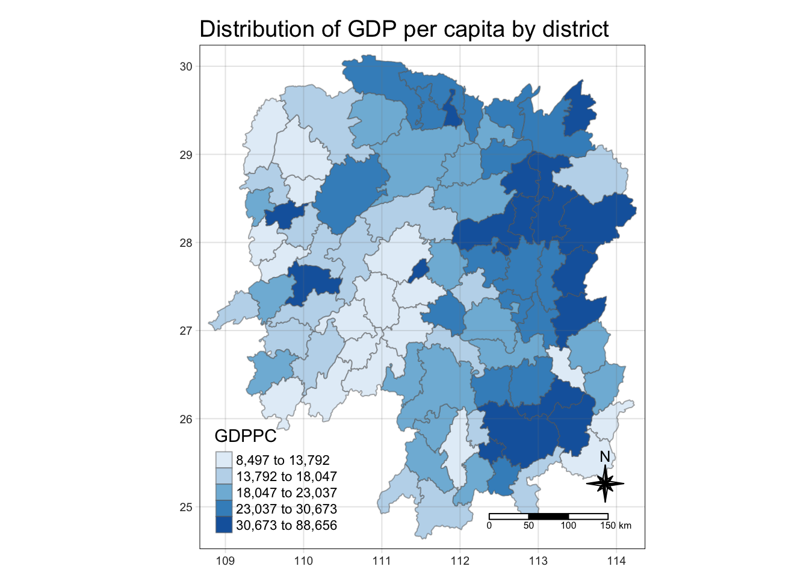

pacman::p_load(sf, sfdep, tmap, tidyverse)In-class Exercise 6: Spatial Weights and Applications
1 Installing and loading the R packages
2 The data
For the purpose of this in class exercise, the Hunan data sets will be used. There are two data sets in this use case, they are:
Hunan, a geospatial data set in the ESRI shapefile format, and
Hunan_2012, an attribute dataset in csv format
2.1 Importing geospatial data: shapefile into R environment
The code chunk below uses st_read() of sf package to import Hunan shapefile into R. The imported shapefile will be simple features Object of sf.
hunan <- st_read(dsn = "data/geospatial",
layer = "Hunan")Reading layer `Hunan' from data source
`/Users/pengyouyun/youyunpeng/IS415/In-class_Ex/In-class_Ex06/data/geospatial'
using driver `ESRI Shapefile'
Simple feature collection with 88 features and 7 fields
Geometry type: POLYGON
Dimension: XY
Bounding box: xmin: 108.7831 ymin: 24.6342 xmax: 114.2544 ymax: 30.12812
Geodetic CRS: WGS 842.2 Import csv file into r environment
Next, we will import Hunan_2012.csv into R by using read_csv() of readr package. The output is R dataframe class. Readr will be loaded as part of tidyverse.
hunan2012 <- read_csv("data/aspatial/Hunan_2012.csv")2.3 Combining both data frames using left join
We want the output in an sf dataframe hence, the left dataframe should be hunan, which has a sf format. We need to find a unique identifier, in this case it is by=“County”, where both data frames have a common field.
hunan_GDPPC<-hunan |>
left_join(hunan2012, by="County") |>
select(1:4, 7, 15) #selecting only the GDPPC column2.4 Plotting in a chloropleth map
tmap_mode("plot")
tm_shape(hunan_GDPPC) +
tm_fill("GDPPC",
style="quantile",
palette="Blues",
totle="GDPPC")+
tm_borders(alpha = 0.5) +
tm_layout(main.title= "Distribution of GDP per capita by district",
main.title.position="center",
main.title.size=1.2,
legend.height=0.45,
legend.width = 0.35,
frame=TRUE)+
tm_compass(type="8star", size=2)+
tm_scale_bar()+
tm_grid(alpha=0.2)
3 Contiguity neighbours method
In the code chunk below st_contiguity() is used to derive a contiguity neighbour list by using Queen’s method
cn_queen<-hunan_GDPPC |>
mutate(nb = st_contiguity(geometry), #creating nearest neighbour list
.before=1) #put newly created field as the first columnThis is just the sf version of spdep::poly2nb
using the rooks method in the code chunk below
cn_rook<-hunan_GDPPC |>
mutate(nb = st_contiguity(geometry), #creating nearest neighbour list
queen=FALSE,
.before=1) #put newly created field as the first columnNext, we want to Convert neighbour list to distance list
4 Computing contiguity weights
4.1 Contiguity weights: Queen’s method
wm_q <- hunan_GDPPC |>
mutate(nb = st_contiguity(geometry),
wt = st_weights(nb),
.before = 1)Different from spdep, sfdep can just condense the calculation of contiguity weights into 1 line. Ie we dont have to code the previous chunk under contiguity method.
wt is a standardised weight matrics that is calculated based on 1/no of neighbours in nb list for each observation.
wm_r <- hunan_GDPPC |>
mutate(nb = st_contiguity(geometry),
queen = FALSE,
wt = st_weights(nb),
.before = 1)fixed distance bandwidth: calculating spatial weights based on distance criteria
- use code st_dist_band(), which is the sf version of dnearneigh() in spdep